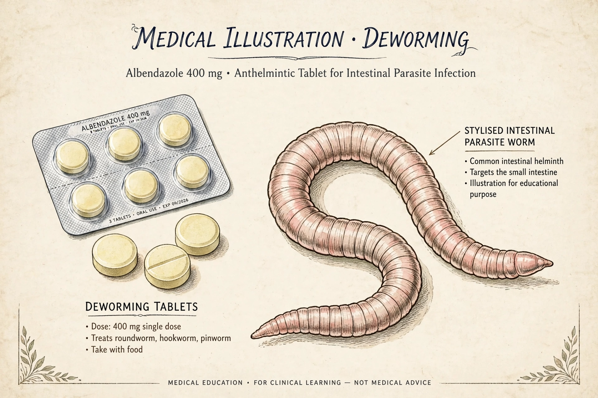

Anthelmintics (also anthelmintics or antihelminthics) are a group of antiparasitic drugs that expel parasitic worms (helminths) and other internal parasites from the body by either stunning or killing them, without causing significant damage to the host. Treatment with anthelmintics is commonly called deworming.
Soil-transmitted helminth infections affect over a billion people, and the World Health Organization recommends periodic mass deworming of schoolchildren and other at-risk groups in endemic areas, usually with albendazole or mebendazole. Anthelmintics are also used extensively in veterinary medicine for livestock and companion animals.
Anthelmintic resistance is widespread in livestock parasites and is a growing concern for human helminths, prompting research into new drug classes, combination therapy, and vaccines.